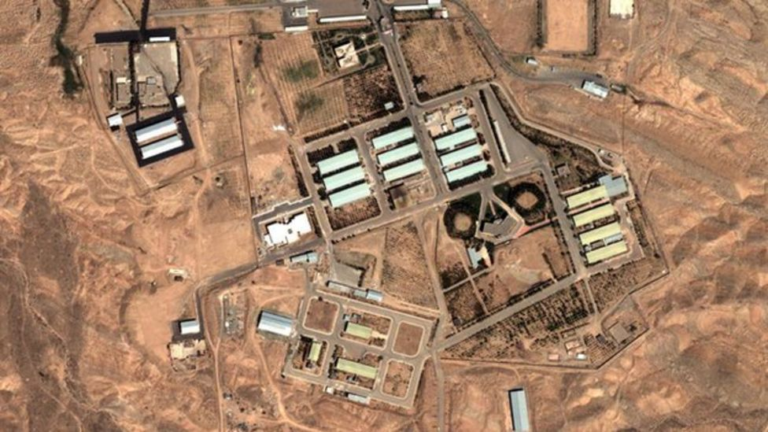

🇺🇦 Ukraine Downs 333 Drones in Overnight Barrage
Date: October 24, 2025
Russia launched a massive overnight assault on Ukraine, deploying 405 drones and 28 missiles targeting energy infrastructure. Ukraine’s air force responded with precision, downing 333 drones and 16 missiles — one of the largest interceptions to date.
Russian strikes killed six civilians, including two children, and triggered nationwide power outages. Moscow claims the attacks were retaliation for Ukrainian strikes on Russian civilian targets.
Russia also announced the capture of Pavlivka (Zaporizhia) and Ivanivka (Dnipropetrovsk), though analysts say gains are minimal.
Diplomatic tensions escalated as Russia reiterated its conditions for ending the war: Ukraine must adopt a non-aligned, nuclear-free status, undergo demilitarization and “denazification”, and guarantee rights for Russian speakers and the Orthodox Church.
Ukraine’s President Zelenskyy has requested 25 Patriot systems from the U.S., while Trump and Putin continue backchannel talks after the canceled summit.
Explore Full Coverage
🔥 Sudan’s Collapsing State
RSF seizes El-Fasher. Hospitals bombed. UN calls for ceasefire. Darfur descends into chaos[43dcd9a7-70db-4a1f-b0ae-981daa162054](https://news.un.org/en/story/2025/10/1166184?citationMarker=43dcd9a7-70db-4a1f-b0ae-981daa162054&citationId=1&citationId=2 "WION").
💣 Gaza–Israel Crisis
Ceasefire frays. Hostage remains exchanged. 68,000 dead. Trump proposes international force, Israel rejects Turkish troops[43dcd9a7-70db-4a1f-b0ae-981daa162054](https://www.aljazeera.com/news/liveblog/2025/10/26/live-israeli-attacks-across-gaza-threaten-ceasefire-one-palestinian-dead?citationMarker=43dcd9a7-70db-4a1f-b0ae-981daa162054&citationId=3&citationId=4 "Gulf Today").
⚔️ Ukraine–Russia Stalemate
218 clashes in 24 hours. Pokrovsk hit hardest. U.S. warns Putin over cruise missile test. Drone strikes reach Moscow[43dcd9a7-70db-4a1f-b0ae-981daa162054](https://www.ukrinform.net/rubric-ato/4052244-war-update-ukrainian-forces-face-218-combat-clashes-over-past-day-pokrovsk-sector-hit-hardest.html?citationMarker=43dcd9a7-70db-4a1f-b0ae-981daa162054&citationId=5&citationId=6 "The Independent").
🧨 India–Pakistan Flashpoint
India launches Exercise Trishul near Sir Creek. Pakistan restricts airspace. Ceasefire remains fragile[43dcd9a7-70db-4a1f-b0ae-981daa162054](https://www.news18.com/india/india-issues-notam-alert-for-tri-services-exercise-along-pakistan-border-from-oct-30-ws-l-9657145.html?citationMarker=43dcd9a7-70db-4a1f-b0ae-981daa162054&citationId=7&citationId=8 "Mathrubhumi English").
🌪️ Eastern DRC Turmoil
M23 rebels clash with government forces. Migration documents invalidated. Peace talks stall despite UN optimism[43dcd9a7-70db-4a1f-b0ae-981daa162054](https://africanarguments.org/2025/10/crisis-in-eastern-drc-the-congolese-government-and-m23-rebels-in-a-standoff-over-migration/?citationMarker=43dcd9a7-70db-4a1f-b0ae-981daa162054&citationId=9&citationId=10 "UN News").
🕊️ Sahel Region Fragmentation
4 million displaced. Coup regimes split from ECOWAS. Climate and jihadist violence destabilize Mali, Niger, Burkina Faso[43dcd9a7-70db-4a1f-b0ae-981daa162054](https://www.usip.org/publications/2024/10/sahel-coup-regimes-split-ecowas-risks-instability-coastal-west-africa?citationMarker=43dcd9a7-70db-4a1f-b0ae-981daa162054&citationId=11&citationId=12 "UN News").
🚨 U.S. Domestic Unrest
‘No Kings’ protests erupt nationwide. 2,500 rallies. 36 arrested. Trump faces backlash over immigration and militarization[43dcd9a7-70db-4a1f-b0ae-981daa162054](https://www.usatoday.com/story/news/politics/2025/10/16/no-kings-protests-trump-what-to-know/86694507007/?citationMarker=43dcd9a7-70db-4a1f-b0ae-981daa162054&citationId=13&citationId=14 "Wikipedia").
🌍 Congo–Uganda Border Tensions
M23 fuels war economy. Rebel zones depend on Ugandan and Rwandan trade. Bunagana reopening fails to restart commerce[43dcd9a7-70db-4a1f-b0ae-981daa162054](https://www.monitor.co.ug/uganda/news/national/uganda-drc-border-trade-remains-stalled-despite-bunagana-reopening-5142662?citationMarker=43dcd9a7-70db-4a1f-b0ae-981daa162054&citationId=15&citationId=16 "ZAWYA").
🧱 West Bank Escalation
Settlers attack olive harvesters. Elderly woman hospitalized. UN warns of “skyrocketing” violence. IDF detains 45[43dcd9a7-70db-4a1f-b0ae-981daa162054](https://www.democracynow.org/2025/10/22/headlines/israeli_forces_detain_45_people_in_the_west_bank_as_un_warns_about_settler_violence?citationMarker=43dcd9a7-70db-4a1f-b0ae-981daa162054&citationId=17&citationId=18 "Palestine Chronicle").
🛰️ Taiwan Strait Maneuvers
229 PLA aircraft detected. Median line breached. U.S. deepens military drills. Australia protests Chinese flare incident[43dcd9a7-70db-4a1f-b0ae-981daa162054](https://www.taipeitimes.com/News/front/archives/2025/10/28/2003846212?citationMarker=43dcd9a7-70db-4a1f-b0ae-981daa162054&citationId=19&citationId=20 "Swarajya").
🇺🇦 Ukraine–Russia War
Ukraine strikes Russian oil sites. Trump urges a freeze on front lines. NATO surveillance intensifies.
🌏 China–Taiwan Tensions
370+ Chinese aircraft near Taiwan. Taiwan deploys jets and missile systems. Tensions rise in the Strait.
🇵🇸 Gaza: Ceasefire and Genocide Debate
Israel’s airstrikes spark global protests. UN reports 30,000+ deaths. ICC reviews war crime allegations.
🇮🇷 Iran: Nuclear Brinkmanship

Enrichment hits 90%. Israel threatens strikes. Vienna talks collapse. Protests erupt in Tehran.
🇸🇾 Syria: Proxy War and Humanitarian Collapse
Assad holds urban centers. Russia, Iran, Turkey, and U.S. back rival factions. Cholera hits refugee camps.
🛡️ Russia–NATO Escalation
NATO jets fly near Russian border. Lithuania mobilizes. Rutte accused of “war propaganda”.
🇷🇺 Russia–USA Relations
Lavrov rejects U.S. nuclear proposals. Trump and Putin plan Budapest summit. Undersea tunnel debated.
🌍 Africa Focus
🇰🇪 Kenya: Raila Odinga’s Legacy and Transition

Kenya bids farewell to Raila Odinga in a state ceremony. His vision for unity and reform remains central to the nation’s political future.
🇳🇬 Nigeria: Youth Protests and Economic Reform
Thousands protest fuel hikes and currency devaluation. President Tinubu faces pressure to deliver on job creation and anti-corruption pledges.
🇪🇹 Ethiopia: Tigray Peace Talks Resume
Talks between Tigrayan leaders and Addis Ababa resume in Nairobi. Aid agencies warn of famine risk as access remains restricted.
🇿🇦 South Africa: Energy Crisis and Post-Election Tensions
Load shedding intensifies as coalition talks stall. ANC faces backlash over corruption and service delivery failures.
🇨🇩 DRC: Mineral Conflict and Regional Diplomacy
Clashes erupt near Goma over cobalt mining rights. Rwanda and Uganda accused of backing rebel militias. AU calls for restraint.
🇸🇩 Sudan: Ceasefire Collapse and Refugee Surge
Fighting resumes in Khartoum despite ceasefire pledges. Over 1 million displaced. UN warns of regional spillover.
📰 Latest Middle East Headlines
🎬 Trending: The Last Horizon
Haunting sci-fi drama explores humanity’s final mission to colonize a distant planet. Streaming now.
🇰🇪 Raila Odinga: Kenya’s Final Goodbye
Thousands gather in Bondo to honor Raila Odinga. A state funeral marks the end of an era in African democracy.